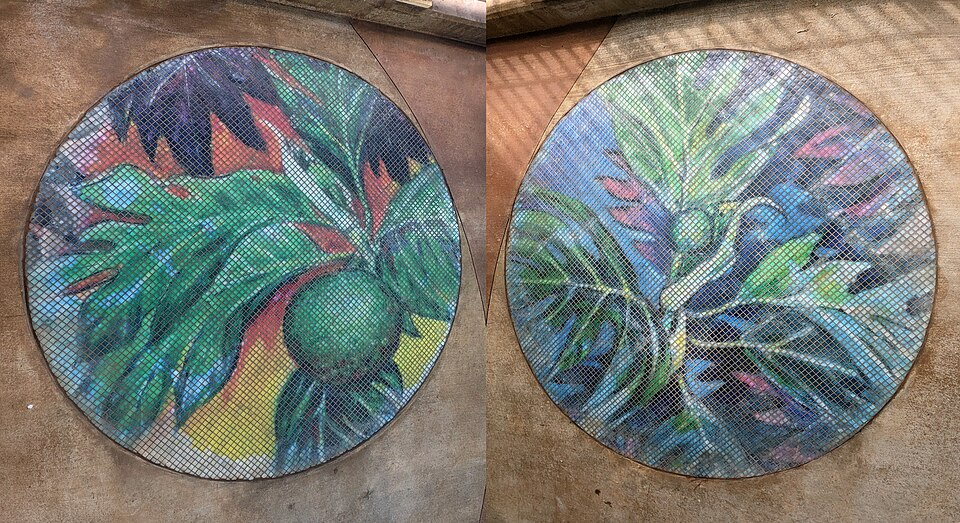

Honouliuli Rail Station
Place: Honouliuli Rail Station, East Kapolei, Oʻahu
Type: Skyline rail station / Hoʻopili station
Namesake: Honouliuli (“dark bay”), the largest traditional ahupuaʻa on Oʻahu, extending from the ʻEwa plain into the Waiʻanae Mountains
Story it tells: How a modern rail station preserves the name of a vast Hawaiian land division transformed by farming, artesian water, sugar cultivation, wartime internment, and the development of modern East Kapolei.

Honouliuli Rail Station, also known as Hoʻopili Station, stands above Farrington Highway in East Kapolei, surrounded today by new homes, roads, and the growing Hoʻopili community. The station opened on June 30, 2023, as part of Skyline's first operating segment. Its name, however, belongs to a much larger and older landscape stretching from the shores of Puʻuloa (Pearl Harbor) into the Waiʻanae Mountains.
Honouliuli is commonly translated as “dark bay”. The name belongs to the largest ahupuaʻa on Oʻahu, covering most of the ʻEwa district. Its lands extended from the dry coastal plains and wetlands surrounding the West Loch of Puʻuloa through the interior valleys and into the Waiʻanae range.
Hawaiian traditions also associate the name with Honouliuli, an aliʻi and husband of the chiefess Kapālama. The couple appear in the moʻolelo of their granddaughter Lepeamoa, a supernatural kupua who could take the form of a woman or bird.
The enormous size of the ahupuaʻa encompassed several different environments. Although much of the interior ʻEwa plain was dry, Native Hawaiians cultivated ʻuala and other crops where conditions allowed. Closer to Puʻuloa, freshwater and wetlands supported loʻi kalo, while coastal communities managed fishponds and harvested fish, limu, shellfish, and other resources from the protected waters of the harbor.
In 1877, businessman James Campbell purchased approximately 41,000 acres of land in the ʻEwa plain. He drilled deep artesian wells that brought groundwater to the surface, allowing previously dry areas to support large-scale commercial agriculture. Campbell leased large tracts of his property for sugar cultivation, and cane fields spread.
Other portions of the enormous ahupuaʻa underwent a very different transformation. During the early twentieth century, the United States military acquired large areas around Puʻuloa as Pearl Harbor developed into a major naval base. Military installations, roads, airfields, and other infrastructure increasingly occupied former agricultural and coastal lands.
During World War II, the name Honouliuli became connected with one of the darkest chapters in the area's modern history. Hidden within a gulch farther inland, the Honouliuli Internment Camp opened in 1943. The camp confined hundreds of Hawaiʻi residents, primarily Japanese Americans detained under martial law, as well as thousands of prisoners of war. Japanese internees called the isolated location Jigoku-Dani, or “Hell Valley.”
After the camp closed following the war, its buildings were removed and vegetation gradually concealed much of the site. The former camp largely disappeared from public view until researchers and community organizations helped relocate and document it decades later. The site was federally protected in 2015 and today preserves the history of wartime incarceration within the larger Honouliuli landscape.
Meanwhile, sugar continued shaping the plains closer to the future rail station until the industry declined late in the twentieth century. Former plantation lands increasingly became part of plans to develop Kapolei as Oʻahu's “Second City.” Roads, schools, businesses, government facilities, and new neighborhoods spread across the former cane fields.
Hoʻopili represents one of the newest stages of that transformation. Thousands of homes and new streets are being built across land that only recently supported sugarcane. Honouliuli Rail Station was constructed beside the growing community, placing rapid transit through a landscape that has repeatedly shifted from Hawaiian agriculture to plantation fields and now suburban development.
During development of Skyline, the Hawaiian Station Naming Working Group researched traditional names associated with the rail corridor and recommended Honouliuli for the station originally identified as Hoʻopili Station. The traditional name places the modern station within the much larger geography of the ahupuaʻa rather than identifying it solely with the new community surrounding it.
Honouliuli has encompassed dry plains, loʻi, fishponds, sugar fields, military lands, a wartime confinement camp, and now some of Oʻahu's fastest-growing communities. The rail station represents another transformation of this vast landscape while returning one of ʻEwa's oldest names to everyday use.